| patents | region | age | iscustomer | |
|---|---|---|---|---|
| 0 | 0 | Midwest | 32.5 | 0 |
| 1 | 3 | Southwest | 37.5 | 0 |
| 2 | 4 | Northwest | 27.0 | 1 |
| 3 | 3 | Northeast | 24.5 | 0 |
| 4 | 3 | Southwest | 37.0 | 0 |
Poisson Regression Examples
Blueprinty Case Study
Introduction
Blueprinty is a small firm that makes software for developing blueprints specifically for submitting patent applications to the US patent office. Their marketing team would like to make the claim that patent applicants using Blueprinty’s software are more successful in getting their patent applications approved. Ideal data to study such an effect might include the success rate of patent applications before using Blueprinty’s software and after using it. Unfortunately, such data is not available.
However, Blueprinty has collected data on 1,500 mature (non-startup) engineering firms. The data include each firm’s number of patents awarded over the last 5 years, regional location, age since incorporation, and whether or not the firm uses Blueprinty’s software. The marketing team would like to use this data to make the claim that firms using Blueprinty’s software are more successful in getting their patent applications approved.
Data
Compare histograms and means of number of patents by customer status
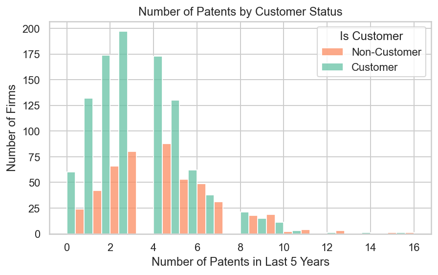
iscustomer
0 3.473013
1 4.133056
Name: patents, dtype: float64The histogram shows that firms who are Blueprinty customers tend to have slightly more patents than non-customers.
The average number of patents over the last 5 years is higher for customers about 4.13 compared to non-customers about 3.47.
Blueprinty customers are not selected at random. It may be important to account for systematic differences in the age and regional location of customers vs non-customers.
Compare regions and ages by customer status
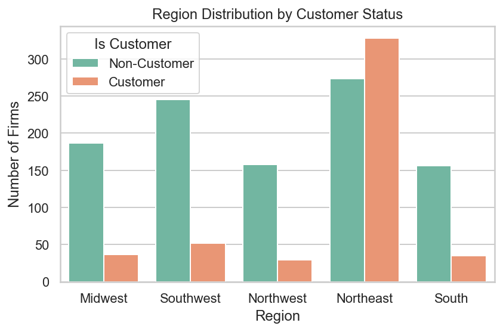
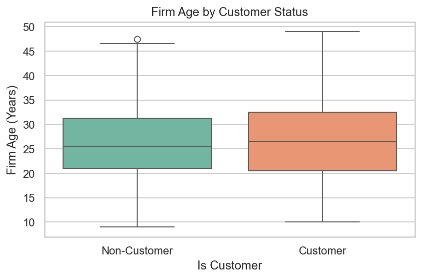
iscustomer
0 26.101570
1 26.900208
Name: age, dtype: float64Blueprinty customers are not evenly distributed across regions. Some regions, such as the Midwest and Southwest, have more customers than others. Location may influence whether a firm adopts Blueprinty’s software. In terms of age, customers are have similar age which is 26.9 years compared to non-customers 26.1 years.
Estimation of Simple Poisson Model
Since our outcome variable of interest can only be small integer values per a set unit of time, we can use a Poisson density to model the number of patents awarded to each engineering firm over the last 5 years. We start by estimating a simple Poisson model via Maximum Likelihood.
Likelihood Function
We assume:
\[
Y_i \sim \text{Poisson}(\lambda)
\]
The probability mass function is:
\[
f(Y \mid \lambda) = \frac{e^{-\lambda} \lambda^Y}{Y!}
\]
For a sample of ( n ) observations ( Y_1, Y_2, …, Y_n ),
the likelihood function is:
\[
\mathcal{L}(\lambda) = \prod_{i=1}^n \frac{e^{-\lambda} \lambda^{Y_i}}{Y_i!}
\]
Taking logs, the log-likelihood becomes: \[ \log \mathcal{L}(\lambda) = \sum_{i=1}^n \left( Y_i \log \lambda - \lambda - \log Y_i! \right) \]
In our implementation, we omit the constant ( Y_i! ) since it does not affect the maximization.
Python Code: Log-Likelihood and MLE Estimation
def poisson_loglikelihood(lmbda, Y):
if lmbda <= 0:
return -np.inf
return np.sum(Y * np.log(lmbda) - lmbda)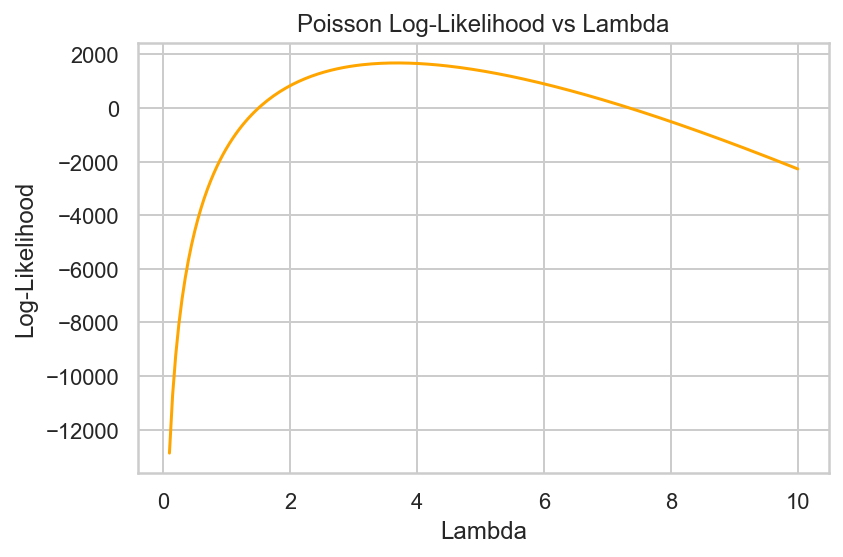
The plot above shows the Poisson log-likelihood function evaluated at a range of possible values for lambda,
using the observed number of patents as data.
- The log-likelihood curve is concave, peaking at the value of lambda that best explains the data.
- This peak corresponds to the maximum likelihood estimate (MLE) of lambda, which in the case of the Poisson distribution is the sample mean of Y.
Deriving the MLE from the Log-Likelihood Function
We take the first derivative of the log-likelihood function, set it equal to zero, and solve for lambda.
Recall the log-likelihood function (ignoring constants):
\[ \log \mathcal{L}(\lambda) = \sum_{i=1}^n \left( Y_i \log \lambda - \lambda \right) \]
Take the derivative with respect to ( ):
\[ \frac{d}{d\lambda} \log \mathcal{L}(\lambda) = \sum_{i=1}^n \left( \frac{Y_i}{\lambda} - 1 \right) = \frac{1}{\lambda} \sum_{i=1}^n Y_i - n \]
Set the derivative equal to zero and solve:
\[ \frac{1}{\lambda} \sum_{i=1}^n Y_i - n = 0 \]
\[ \Rightarrow \hat{\lambda}_{\text{MLE}} = \frac{1}{n} \sum_{i=1}^n Y_i = \bar{Y} \]
This result confirms that the maximum likelihood estimator for lambda in a Poisson model is simply the sample mean of the data.
This aligns with our intuition, as the Poisson distribution assumes the mean and variance are both equal to lambda.
Find the MLE by optimizing the log-likelihood function
def neg_loglik(lmbda):
if lmbda[0] <= 0:
return np.inf
return -np.sum(Y * np.log(lmbda[0]) - lmbda[0])
# Use scipy.optimize.minimize to find MLE
result = optimize.minimize(neg_loglik, x0=[1.0], bounds=[(0.01, None)])
lambda_mle_optim = result.x[0]
lambda_mle_optim3.6846667444219783Interpretation
The code above uses scipy.optimize.minimize to numerically maximize the Poisson log-likelihood function by minimizing its negative.
- The objective function is written in terms of lambda, the rate parameter of the Poisson distribution.
- The optimizer searches for the value of lambda that best fits the observed patent data.
The result shows that the MLE for lambda is approximately 3.68,
which matches the sample mean of the data which the analytical MLE we derived earlier. And this also matched with previous graph.
Estimation of Poisson Regression Model
Next, we extend our simple Poisson model to a Poisson Regression Model such that \(Y_i = \text{Poisson}(\lambda_i)\) where \(\lambda_i = \exp(X_i'\beta)\). The interpretation is that the success rate of patent awards is not constant across all firms (\(\lambda\)) but rather is a function of firm characteristics \(X_i\). Specifically, we will use the covariates age, age squared, region, and whether the firm is a customer of Blueprinty.
Python Code: Log-Likelihood for Poisson Regression
def poisson_regression_loglik(beta, Y, X):
"""
beta: coefficient vector
Y: observed count outcome (n,)
X: covariate matrix (n, k)
"""
lambda_i = np.exp(X @ beta)
loglik = np.sum(Y * np.log(lambda_i) - lambda_i)
return loglikPoisson Regression Model
\[ \log(\lambda_i) = \beta_0 + \beta_1 \cdot \text{region}_{NE} + \beta_2 \cdot \text{region}_{NW} + \cdots + \beta_k \cdot \text{iscust} \]
Here, \(\lambda_i\) represents the expected number of patents for firm \(i\),
which is obtained through the inverse link function: exp(X @ beta).
from scipy.optimize import minimize
from scipy.special import gammaln
import numdifftools as nd
df = df.dropna(subset=["patents", "age", "region", "iscustomer"])
df["age_c"] = df["age"] - df["age"].mean()
df["age_c_sq"] = df["age_c"] ** 2Build design matrix
region_dummies = pd.get_dummies(df["region"], prefix="reg", drop_first=True)
design_matrix = pd.concat([
pd.Series(1, name="const", index=df.index),
df[["age_c", "age_c_sq", "iscustomer"]],
region_dummies
], axis=1)
X_vals = design_matrix.to_numpy(dtype=float)
y_vals = df["patents"].to_numpy(dtype=float)Poisson log-likelihood and Negative log-likelihood
def log_likelihood_poisson(params, y, X):
eta = X @ params
mu = np.exp(eta)
return np.sum(y * np.log(mu) - mu - gammaln(y + 1))
def neg_loglik(params):
return -log_likelihood_poisson(params, y_vals, X_vals)Fit model with BFGS
init_params = np.zeros(X_vals.shape[1])
opt = minimize(neg_loglik, init_params, method="BFGS")
coef_est = opt.xHessian and standard errors
hess_calc = nd.Hessian(neg_loglik)
hess_matrix = hess_calc(coef_est)
cov_est = np.linalg.inv(hess_matrix)
std_errors = np.sqrt(np.diag(cov_est))| Predictor | Estimate | StdError | |
|---|---|---|---|
| 0 | const | 1.344676 | 0.038311 |
| 1 | age_c | -0.007970 | 0.002074 |
| 2 | age_c_sq | -0.002970 | 0.000254 |
| 3 | iscustomer | 0.207591 | 0.030892 |
| 4 | reg_Northeast | 0.029170 | 0.043624 |
| 5 | reg_Northwest | -0.017575 | 0.053781 |
| 6 | reg_South | 0.056561 | 0.052662 |
| 7 | reg_Southwest | 0.050576 | 0.047198 |
Comparison with statsmodels GLM
import patsy
df["age_sq"] = df["age"] ** 2
formula = "patents ~ age + age_sq + C(region) + iscustomer"
y, X = patsy.dmatrices(formula, df, return_type='dataframe')
Y = np.asarray(y).flatten()
import statsmodels.api as sm
# Fit Poisson GLM using statsmodels
glm_poisson = sm.GLM(Y, X, family=sm.families.Poisson())
glm_results = glm_poisson.fit()
# Extract coefficients and standard errors
summary_glm = pd.DataFrame({
"Coefficient (GLM)": glm_results.params,
"Std. Error (GLM)": glm_results.bse
}, index=X.columns)
summary_glm| Coefficient (GLM) | Std. Error (GLM) | |
|---|---|---|
| Intercept | -0.508920 | 0.183179 |
| C(region)[T.Northeast] | 0.029170 | 0.043625 |
| C(region)[T.Northwest] | -0.017575 | 0.053781 |
| C(region)[T.South] | 0.056561 | 0.052662 |
| C(region)[T.Southwest] | 0.050576 | 0.047198 |
| age | 0.148619 | 0.013869 |
| age_sq | -0.002970 | 0.000258 |
| iscustomer | 0.207591 | 0.030895 |
Identical coefficient estimates and standard errors which confirming that our custom approach is implemented correctly.
Intercept (const)
- The estimated intercept is 1.3447, representing the expected log number of patents for the reference group: individuals in the base region, with centered age = 0 (i.e., average age), and not customers.
- The corresponding expected number of patents is
exp(1.3447) ≈ 3.84.
Age Effects
age_chas a negative coefficient (-0.0080), suggesting that as age increases (from the mean), the expected number of patents decreases slightly.age_c_sqis also negative, indicating a concave (inverted U-shaped) relationship between age and patents — i.e., patent activity rises with age to a point and then falls.
Customer Status (iscustomer)
- The coefficient of 0.2076 implies that customers have higher expected patent counts than non-customers.
- Interpreted as an incidence rate ratio:
exp(0.2076) ≈ 1.23, meaning customers have about 23% more expected patents than non-customers, holding other factors constant.
Regional Effects
- Dummy variables for
reg_Northeast,reg_Northwest,reg_South, andreg_Southwestreflect differences from the reference region. - These coefficients are relatively small in magnitude and have larger standard errors, suggesting that regional differences may not be statistically significant in explaining patent counts.
Estimating the Impact of Customer Status on Predicted Patents – Uplift
X_0 = X.copy()
X_1 = X.copy()
iscust_col = [col for col in X.columns if "iscustomer" in col][0]
# Set iscustomer = 0 in X_0, 1 in X_1
X_0[iscust_col] = 0
X_1[iscust_col] = 1
X_0_np = np.asarray(X_0)
X_1_np = np.asarray(X_1)
# Get predicted patent counts
y_pred_0 = np.exp(X_0_np @ glm_results.params)
y_pred_1 = np.exp(X_1_np @ glm_results.params)
#Uplift
uplift = y_pred_1 - y_pred_0
average_uplift = np.mean(uplift)
average_uplift0.7927680710453031Firms using Blueprinty are 0.793 more patents over 5 years compared to if they had not used the software.
AirBnB Case Study
Introduction
AirBnB is a popular platform for booking short-term rentals. In March 2017, students Annika Awad, Evan Lebo, and Anna Linden scraped of 40,000 Airbnb listings from New York City. The data include the following variables:
Exploratory Data Analysis
df = pd.read_csv("airbnb.csv")
# 1. Numeric variable EDA
numeric_cols = [
"number_of_reviews", "days", "bathrooms", "bedrooms", "price",
"review_scores_cleanliness", "review_scores_location", "review_scores_value"
]
# Describe numeric variables
numeric_summary = df[numeric_cols].describe().T
numeric_summary| count | mean | std | min | 25% | 50% | 75% | max | |
|---|---|---|---|---|---|---|---|---|
| number_of_reviews | 40628.0 | 15.904426 | 29.246009 | 0.0 | 1.0 | 4.0 | 17.0 | 421.0 |
| days | 40628.0 | 1102.368219 | 1383.269358 | 1.0 | 542.0 | 996.0 | 1535.0 | 42828.0 |
| bathrooms | 40468.0 | 1.124592 | 0.385884 | 0.0 | 1.0 | 1.0 | 1.0 | 8.0 |
| bedrooms | 40552.0 | 1.147046 | 0.691746 | 0.0 | 1.0 | 1.0 | 1.0 | 10.0 |
| price | 40628.0 | 144.760732 | 210.657597 | 10.0 | 70.0 | 100.0 | 170.0 | 10000.0 |
| review_scores_cleanliness | 30433.0 | 9.198370 | 1.119935 | 2.0 | 9.0 | 10.0 | 10.0 | 10.0 |
| review_scores_location | 30374.0 | 9.413544 | 0.844949 | 2.0 | 9.0 | 10.0 | 10.0 | 10.0 |
| review_scores_value | 30372.0 | 9.331522 | 0.902966 | 2.0 | 9.0 | 10.0 | 10.0 | 10.0 |
# 2. Missing value check
# Calculate the proportion of missing values
missing_summary = df[numeric_cols + ["room_type", "instant_bookable"]].isna().mean().sort_values(ascending=False)
missing_summaryreview_scores_value 0.252437
review_scores_location 0.252388
review_scores_cleanliness 0.250935
bathrooms 0.003938
bedrooms 0.001871
number_of_reviews 0.000000
days 0.000000
price 0.000000
room_type 0.000000
instant_bookable 0.000000
dtype: float64# 3. Distribution plots (numeric)
plt.figure(figsize=(6, 4))
sns.histplot(df["number_of_reviews"].dropna(), bins=50)
plt.title("Distribution of Number of Reviews")
plt.xlabel("Number of Reviews")
plt.ylabel("Count")
plt.tight_layout()
plt.show()
plt.figure(figsize=(6, 4))
sns.histplot(df["price"].dropna(), bins=50)
plt.yscale("log")
plt.title("Distribution of Price (Log Scale)")
plt.xlabel("Price (USD)")
plt.ylabel("Count")
plt.tight_layout()
plt.show()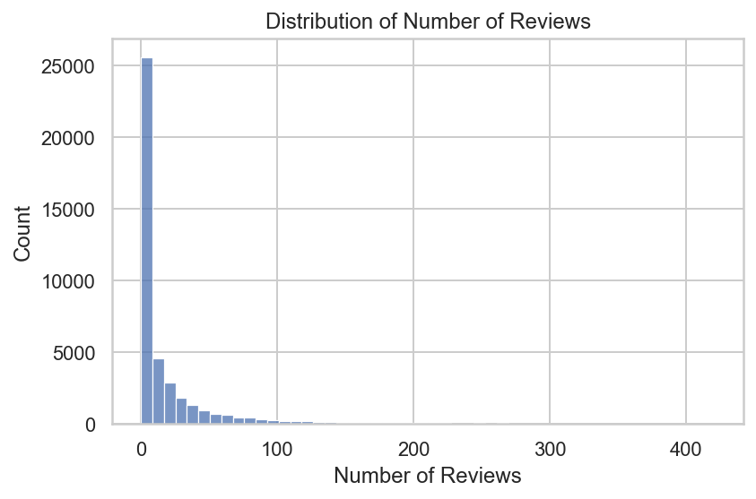
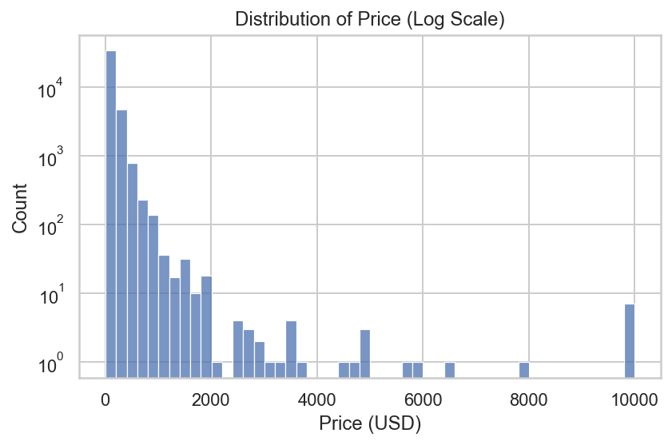
Number of Reviews:
The distribution is highly right-skewed. Most listings have very few reviews, with a large spike at zero or single-digit counts.
Only a small number of listings receive over 100 reviews. This confirms that review counts are not normally distributed and supports the use of a Poisson model for count data.Price (Log Scale):
Prices also show a strong right skew, with the majority of listings priced under $500.
The log-scale y-axis reveals a long tail of high-priced listings, some reaching $10,000.
A few peaks in the upper end may indicate outliers or intentionally high-priced luxury listings.
This distribution suggests that price might need transformation or binning in further analysis.
# 4. Correlation heatmap
plt.figure(figsize=(8, 6))
sns.heatmap(df[numeric_cols].corr(), annot=True, cmap="Blues", fmt=".2f")
plt.title("Correlation Matrix of Numeric Variables")
plt.tight_layout()
plt.show()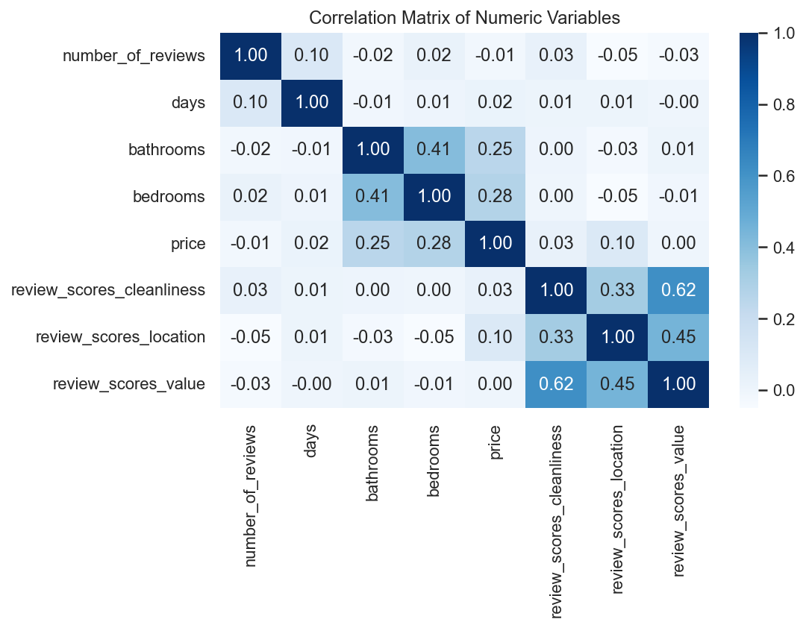
Most numeric variables have low correlations with each other, suggesting no strong multicollinearity.
# 5. Categorical variable EDA
# Frequency + Proportion
room_type_counts = df["room_type"].value_counts()
room_type_props = df["room_type"].value_counts(normalize=True)
instant_counts = df["instant_bookable"].value_counts()
instant_props = df["instant_bookable"].value_counts(normalize=True)
# Grouped means
room_type_review_mean = df.groupby("room_type")["number_of_reviews"].mean()
instant_review_mean = df.groupby("instant_bookable")["number_of_reviews"].mean()
room_summary = pd.DataFrame({
"Count": room_type_counts,
"Proportion": room_type_props,
"Avg_Reviews": room_type_review_mean
})
instant_summary = pd.DataFrame({
"Count": instant_counts,
"Proportion": instant_props,
"Avg_Reviews": instant_review_mean
})
room_summary| Count | Proportion | Avg_Reviews | |
|---|---|---|---|
| room_type | |||
| Entire home/apt | 19873 | 0.489145 | 16.823580 |
| Private room | 19532 | 0.480752 | 15.222609 |
| Shared room | 1223 | 0.030102 | 11.857727 |
instant_summary| Count | Proportion | Avg_Reviews | |
|---|---|---|---|
| instant_bookable | |||
| f | 32759 | 0.806316 | 14.705882 |
| t | 7869 | 0.193684 | 20.894014 |
# 6. Categorical plots
sns.countplot(x="room_type", data=df)
plt.title("Room Type Distribution")
plt.xlabel("Room Type")
plt.ylabel("Count")
plt.tight_layout()
plt.show()
sns.countplot(x="instant_bookable", data=df)
plt.title("Instant Bookable Distribution")
plt.xlabel("Instant Bookable")
plt.ylabel("Count")
plt.tight_layout()
plt.show()
sns.boxplot(x="room_type", y="number_of_reviews", data=df)
plt.yscale("log")
plt.title("Number of Reviews by Room Type")
plt.tight_layout()
plt.show()
sns.boxplot(x="instant_bookable", y="number_of_reviews", data=df)
plt.yscale("log")
plt.title("Number of Reviews by Instant Bookable Status")
plt.tight_layout()
plt.show()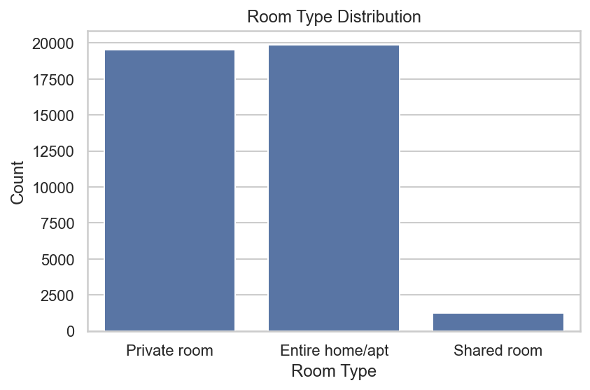
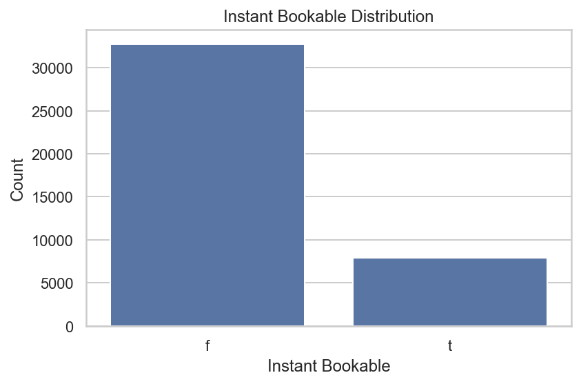
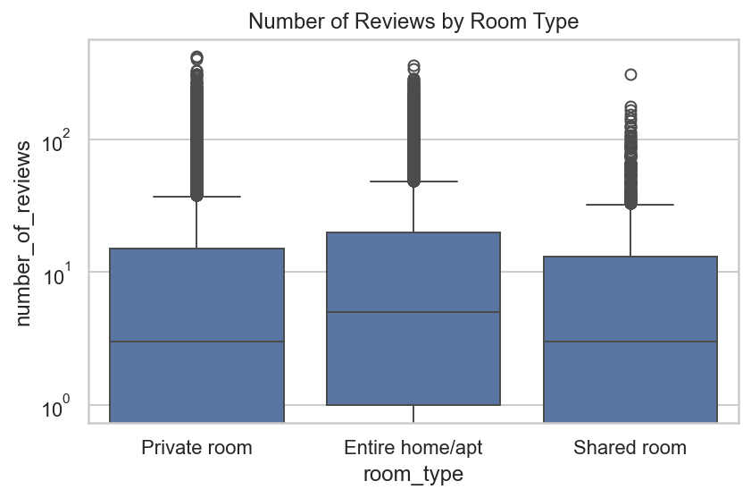
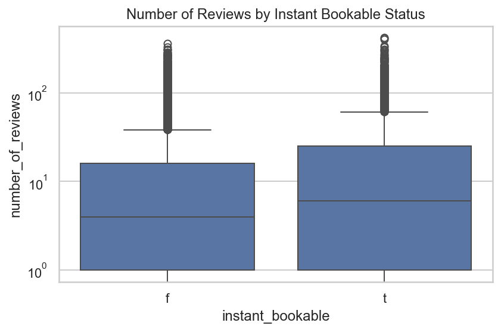
Poisson Regression Model for Number of Reviews
I use review count as a proxy for how often a listing is booked, and model it using Poisson regression, because the target variable is a count (i.e., 0, 1, 2, …) First, I cleaned the dataset, removing rows with missing values in relevant columns. Categorical variables such as room_type and instant_bookable are transformed into numerical or dummy variables. Then, I fit a Poisson Generalized Linear Model (GLM) using statsmodels.
The output includes estimated coefficients and standard errors, which are used to interpret how each factor influences the expected number of reviews. Overall, this model allows us to understand which listing characteristics are associated with higher booking activity on Airbnb.
cols = [
"number_of_reviews", "days", "room_type", "bathrooms", "bedrooms",
"price", "review_scores_cleanliness", "review_scores_location",
"review_scores_value", "instant_bookable"
]
df = df[cols].dropna() # Drop missing values
# Encode "t"/"f" to 1/0
df["instant_bookable"] = (df["instant_bookable"] == "t").astype(int)
# Convert categorical into dummy variables
df = pd.get_dummies(df, columns=["room_type"], drop_first=True)
# Prepare model input
y = df["number_of_reviews"].astype(float)
X = df.drop(columns=["number_of_reviews"])
X = sm.add_constant(X)
X = X.astype(float)
# Poisson regression model
model = sm.GLM(y, X, family=sm.families.Poisson())
results = model.fit()
summary = pd.DataFrame({
"Coefficient": results.params,
"Std. Error": results.bse,
"p-value": results.pvalues
})
summary| Coefficient | Std. Error | p-value | |
|---|---|---|---|
| const | 3.498049 | 1.609066e-02 | 0.000000e+00 |
| days | 0.000051 | 3.909218e-07 | 0.000000e+00 |
| bathrooms | -0.117704 | 3.749225e-03 | 2.427557e-216 |
| bedrooms | 0.074087 | 1.991742e-03 | 7.567674e-303 |
| price | -0.000018 | 8.326458e-06 | 3.148517e-02 |
| review_scores_cleanliness | 0.113139 | 1.496336e-03 | 0.000000e+00 |
| review_scores_location | -0.076899 | 1.608903e-03 | 0.000000e+00 |
| review_scores_value | -0.091076 | 1.803855e-03 | 0.000000e+00 |
| instant_bookable | 0.345850 | 2.890138e-03 | 0.000000e+00 |
| room_type_Private room | -0.010536 | 2.738448e-03 | 1.193451e-04 |
| room_type_Shared room | -0.246337 | 8.619793e-03 | 1.259254e-179 |
Interpretation of Poisson Regression Coefficients
All p-values are below 0.05, indicating that all included predictors are statistically significant at the 5% level. The Poisson regression model estimates the expected number of reviews (as a proxy for bookings) for Airbnb listings. Below are interpretations of selected coefficients:
days: The coefficient is very small but positive (0.00005), indicating that listings active for longer periods tend to accumulate more reviews over time, though the marginal effect is minimal.
bathrooms: A negative coefficient (–0.118) suggests that, holding all else constant, units with more bathrooms tend to receive fewer reviews. This may be due to larger or more expensive listings being booked less frequently.
bedrooms: The coefficient (0.074) is positive, implying that listings with more bedrooms tend to receive more reviews. Larger spaces may be more attractive to groups.
price: A small negative effect (–0.000018) suggests that higher nightly prices slightly reduce the number of bookings (reviews), which aligns with economic intuition.
review_scores_cleanliness: A positive coefficient (0.113) means that listings with higher cleanliness ratings tend to have more reviews, possibly due to better guest experiences.
review_scores_location & value: Both are negatively associated with review counts (–0.077 and –0.091). This might indicate that lower-scoring listings get more negative feedback, but caution is needed—these could reflect complex review dynamics.
instant_bookable: A strongly positive coefficient (0.346) indicates that listings allowing instant booking receive significantly more reviews. This makes sense, as they reduce friction in the booking process.
room_type:
- Private room: Has a small negative coefficient (–0.011), suggesting slightly fewer reviews compared to the reference category (likely “Entire home/apt.”).
- Shared room: Shows a much larger negative coefficient (–0.246), meaning these listings get substantially fewer bookings/reviews on average.
Summary
The results suggest that review counts and booking activity are influenced by cleanliness, pricing, and accessibility features such as instant booking. These insights can help hosts optimize their listings to increase visibility and engagement on the platform.